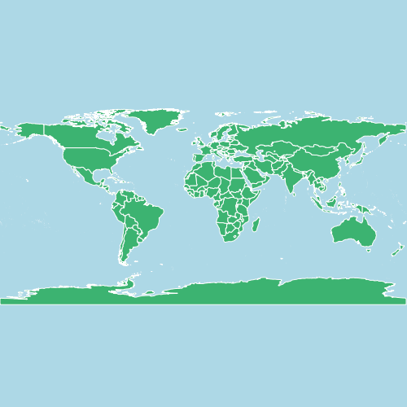
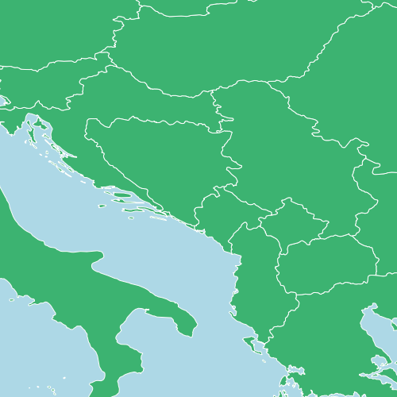

Benchmarking: FlatGeobuf versus Shapefile#
This post gives benchmark MapServer rendering times of a countries dataset in two different formats FlatGeobuf and Shapefile.
{kind=link}

{kind=link}
Setup#
The countries used in the tests are from the public domain Natural Earth dataset. ogr2ogr was used to convert the data into the FlatGeobuf and Shapefile formats. Data was kept in the WGS 84 (EPSG:4326) spatial reference system, so no reprojections were required for rendering.
MapServer 8.0.1 (x64-bit) was used for the analysis, running on a physical Windows 10 machine with 32 GB of RAM and a 4 core 3.60 GHz Intel processor.
The MapServer utility program map2img was used for the benchmarking, with times taken by analysing the log outputs. Images for each benchmark were created 100 times, with the lowest generation time taken for the benchmark.
The Mapfile used for testing the FlatGeobuf is below:
MAP
NAME "FlatGeobuf"
IMAGETYPE "png"
SIZE 500 500
EXTENT -180 -90 180 90
IMAGECOLOR "#ADD8E6"
PROJECTION
"init=epsg:4326"
END
LAYER
NAME "countries"
TYPE POLYGON
STATUS ON
CONNECTIONTYPE OGR
CONNECTION "D:\Data\NaturalEarth"
DATA "ne_10m_admin_0_countries"
CLASS
STYLE
COLOR 60 179 113
OUTLINECOLOR 255 255 255
OUTLINEWIDTH 0.1
END
END
END
END
The Mapfile used for testing the Shapefile had the following LAYER:
LAYER
NAME "countries"
TYPE POLYGON
STATUS ON
DATA "D:\Data\NaturalEarth\ne_10m_admin_0_countries.shp"
CLASS
STYLE
COLOR 60 179 113
OUTLINECOLOR 255 255 255
OUTLINEWIDTH 0.1
END
END
END
When first running the Shapefile tests there were warnings in the output logs about a missing spatial index:
No spatial index:
msSearchDiskTree(): Search returned no results. Unable to open spatial index for ne_10m_admin_0_countries.qix.
In most cases you can safely ignore this message, otherwise check file names and permissions.
A spatial index was created using MapServer’s shptree utility program, that was then used in the tests:
shptree ne_10m_admin_0_countries.shp
# this generates a file named: ne_10m_admin_0_countries.qix
Test 1: Full Dataset#
The first test was simply to display the whole dataset, using the following commands:
map2img -m FlatGeobuf.map -o FlatGeobuf.png -map_debug 2 -c 100
map2img -m Shapefile.map -o Shapefile.png -map_debug 2 -c 100
These tests rendered the image below (100 times):
{kind=link}
Results:
# FlatGeobuf
Minimum: 0.065
Mean: 0.0736
Median: 0.072
# Shapefile
Minimum: 0.033
Mean: 0.03872
Median: 0.038
The percentage difference in time is: 49.23%
FlatGeobuf is 1.97x slower than Shapefile
Well not quite what I was expecting - rendering the Shapefile is almost twice as fast! There are however a few things to note:
The difference is only 32 milliseconds - way below the 100 ms threshold of human perception
The whole dataset is being displayed, so any advantages of a format’s spatial indexes won’t be taken into consideration
FlatGeobuf is being read by MapServer using OGR. This has an overhead in terms of performance, but using OGR (a part of GDAL) has a number of advantages such as taking advantage of GDAL Virtual File Systems to be able to read datasets across networks.
Test 2: Full Dataset - Native FlatGeobuf Driver#
This test uses the same FlatGeobuf dataset, but uses the native MapServer FlatGeobuf driver. “Native” means that the driver used to read the dataset is part of the MapServer codebase, rather than the OGR driver used in the first test which is part of GDAL/OGR. In theory using a driver written just for MapServer removes some of the overhead of going through OGR, but let’s test that assumption.
The same Mapfile is used for the test, but the CONNECTION for the LAYER is set to flatgeobuf:
LAYER
NAME "countries"
TYPE POLYGON
STATUS ON
CONNECTIONTYPE flatgeobuf
DATA "D:\Data\NaturalEarth\ne_10m_admin_0_countries.fgb"
CLASS
STYLE
COLOR 60 179 113
OUTLINECOLOR 255 255 255
OUTLINEWIDTH 0.1
END
END
END
And the results:
# Native FlatGeobuf
Minimum: 0.034
Mean: 0.04394
Median: 0.039
# Shapefile
Minimum: 0.033
Mean: 0.03872
Median: 0.038
The percentage difference in time is: 2.94%
FlatGeobuf is 1.03x slower than Shapefile
Now we are at almost comparable speeds between the two data formats, with only a 0.001 second (a millisecond) difference between the minimum rendering time.
Test 3: Zoomed In#
Rendered maps probably won’t always display all the data from a dataset. We’ll now compare rendering times between a Shapefile and the native FlatGeobuf driver, zoomed in to Europe.
map2img -m FlatGeobufNative.map -o FlatGeobufNative-bbox.png -map_debug 2 -c 100 -e 6.37 18.46 58.93 70.18
map2img -m Shapefile.map -o Shapefile-bbox.png -map_debug 2 -c 100 -e 6.37 18.46 58.93 70.18
These tests generate the following image:
{kind=link}
And the results:
# Native FlatGeobuf
Minimum: 0.017
Mean: 0.0217
Median: 0.021
# Shapefile
Minimum: 0.021
Mean: 0.02569
Median: 0.024
The percentage difference in time is: -23.53%
FlatGeobuf is 1.24x faster than Shapefile
Now we’re filtering data spatially FlatGeobuf is faster than the Shapefile. Similar results were found at various zoom levels - whenever a spatial filter was applied.
Conclusions#
Benchmarking tests will never replace testing real-world performance testing for individual deployments. Even in this very simple example there are many variables that could be changed including:
using native or OGR MapServer drivers - not just for FlatGeobuf, but Shapefiles can also be read in MapServer using OGR
creation of spatial indexes
zoom levels
attribute filtering
The benchmark tests here only use simple rendering, and are testing data access speeds. In theory once the shapes are loaded into MapServer the rendering of features should be independent of the data source.
The largest time difference in the tests is below the established 100 ms threshold of human perception, so for generating responses to web mapping requests data format will make little difference. However most systems will include many layers and datasets and these differences can add up until they are noticeable. If you are rendering millions of images, for example map tiles to populate a cache, then these times become even more significant in terms of processing time and costs.
Performance alone is not a good reason for choosing a data format. In these example we used file-formats, but if data is being continually edited then serving data from a database would likely be the better choice even if slower. Shapefiles have been around for a long time, and the MapServer codebase has had over twenty years of testing and code optimisations, but the format has several issues, and is gradually being replaced with newer formats such as FlatGeobuf which have a number of advantages such as ability to be streamed, and without some of the limits on storing attribute data when using Shapefiles.